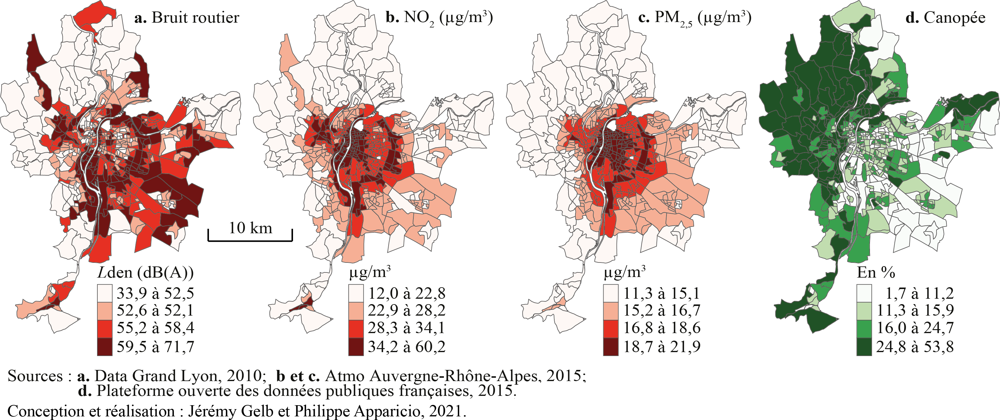
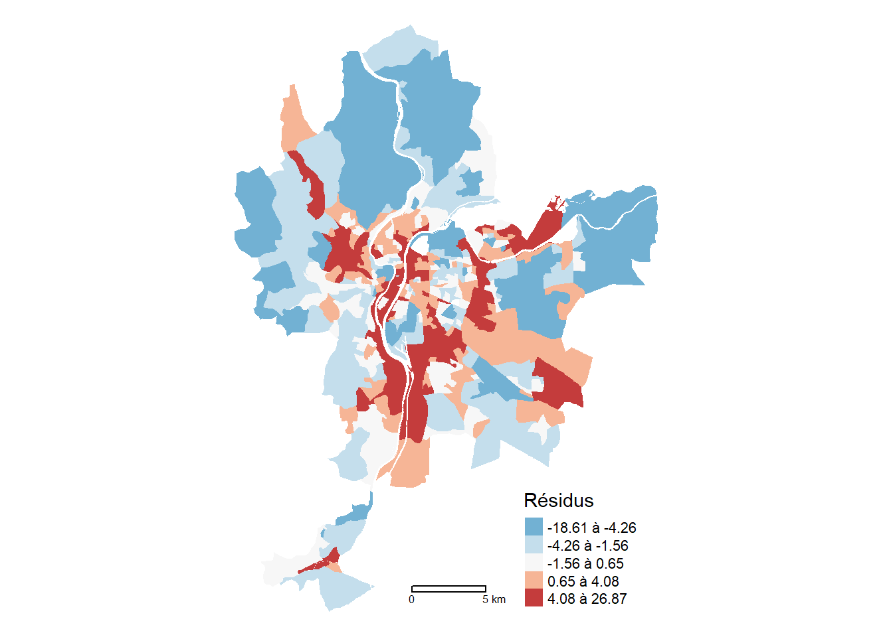
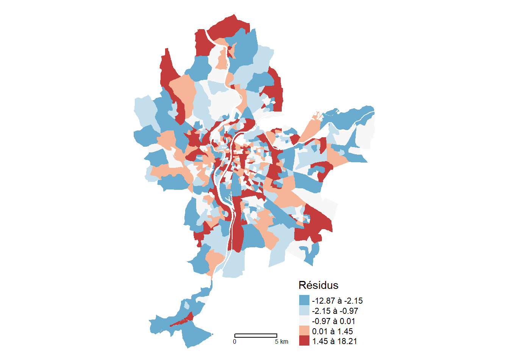
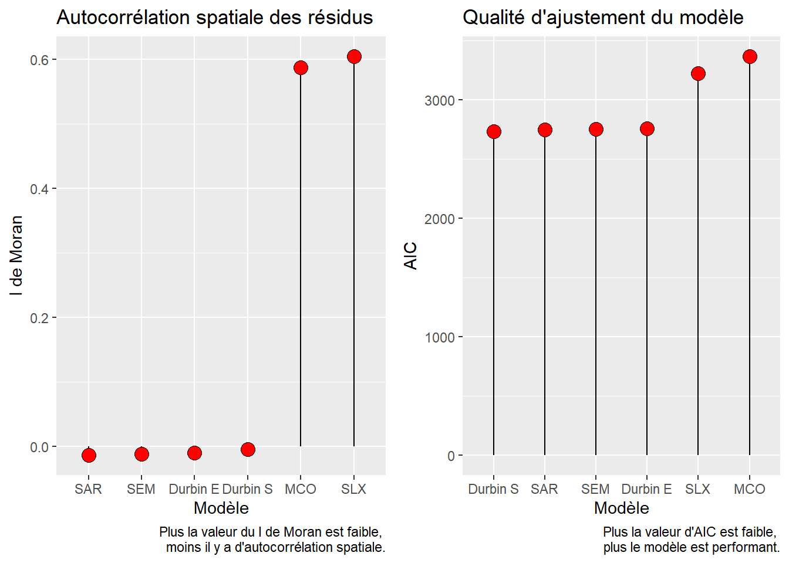

| Nom | Intitulé | Type | Moy. | E.-T. | Min. | Max. | |
|---|---|---|---|---|---|---|---|
| Lden | Lden | Bruit routier (Lden dB(A)) | EN | 55,6 | 4,9 | 33,9 | 71,7 |
| NO2 | NO2 | Dioxyde d’azote (ug/m3) | EN | 28,7 | 7,9 | 12,0 | 60,2 |
| PM25 | PM25 | Particules fines (PM\(_{2,5}\)) | EN | 16,8 | 2,1 | 11,3 | 21,9 |
| VegHautPrt | VegHautPrt | Canopée (%) | EN | 18,7 | 10,1 | 1,7 | 53,8 |
| Pct0_14 | Pct0_14 | Moins de 15 ans (%) | SE | 18,5 | 5,7 | 0,0 | 54,0 |
| Pct_65 | Pct_65 | 65 ans et plus (%) | SE | 16,2 | 5,9 | 0,0 | 45,1 |
| Pct_Img | Pct_Img | Immigrants (%) | SE | 14,5 | 9,1 | 0,0 | 59,8 |
| TxChom1564 | TxChom1564 | Taux de chômage | SE | 14,8 | 8,1 | 0,0 | 98,8 |
| Pct_brevet | Pct_brevet | Personnes à faible scolarité (%) | SE | 23,5 | 12,6 | 0,0 | 100,0 |
| NivVieMed | NivVieMed | Médiane du niveau de vie (milliers d’euros) | SE | 21,8 | 4,9 | 11,3 | 38,7 |
2 Modèles d’économétrie spatiale
L’objectif de ce chapitre est de donner un aperçu des différents modèles économétriques spatiaux.
Objectifs d’apprentissage visés dans ce chapitre
À la fin de ce chapitre, vous devriez être en mesure de :
- À modifier.
- À modifier.
- À modifier.
- Analyser les résultats produits par ces différentes modèles.
- Mettre en pratique ces modèles spatiaux par panel dans R.
Liste des packages utilisés dans ce chapitre
- Pour importer et manipuler des fichiers géographiques :
-
sfpour importer et manipuler des données vectorielles.
-
- Pour construire des cartes et des graphiques :
-
tmapest certainement le meilleur package pour la cartographie. -
ggplot2pour construire des graphiques.
-
- Pour construire des modèles spatiaux :
-
spdeppour construire des matrices de pondération spatiales et calculer le I de Moran. -
spatialregpour construire des modèles économétriques spatiaux.
-
Pour décrire les différents modèles, nous proposons d’utiliser le jeu de données spatiales LyonIris du package geocmeans. Ce jeu de données spatiales pour l’agglomération lyonnaise (France) comprend dix variables, dont quatre environnementales (EN) et six socioéconomiques (SE), pour les îlots regroupés pour l’information statistique (IRIS) de l’agglomération lyonnaise (tableau 2.1 et figure 2.1).

2.1 Pourquoi recourir à des modèles économétriques spatiaux?
Régression linéaire multiple et modèles économétriques spatiaux
Dans cette section, nous décrivons uniquement les modèles économétriques spatiaux dont la variable dépendante est continue. Sommairement, ces modèles sont des extensions de la régression linéaire multiple dans laquelle est intégrée l’autocorrélation spatiale. Avant de lire cette section, il faut donc bien maîtriser la régression linéaire multiple. Si ce n’est pas le cas, nous vous invitons vivement à lire le chapitre suivant (Apparicio et Gelb 2022).
Ces deux dernières décennies, plusieurs ouvrages traitant des modèles économétriques spatiaux ont été publiés, surtout en anglais (LeSage et Pace 2008; Anselin et Rey 2014; Bivand et al. 2008). Ils méritent grandement d’être consultés, tout comme l’excellent livre en français de Jean Dubé et Diègo Legros (2014).
Dans un modèle, les résidus (\(\epsilon\)) sont la différence entre les valeurs observées (\(y_i\)) et les valeurs prédites par le modèle (\(\widehat{y_i}\)). Une des hypothèses de la régression linéaire multiple est que les observations doivent être indépendantes les unes des autres (indépendance du terme d’erreur). Le non-respect de cette hypothèse produit des résultats biaisés, notamment pour les coefficients de régression.
Lorsque les observations sont des entités spatiales (polygones, points par exemple), si les résidus du modèle sont autocorrélés spatialement, il y a un problème de dépendance spatiale du modèle. Autrement dit, les observations ne sont pas spatialement indépendantes les unes des autres. Pour vérifier la dépendance spatiale d’un modèle, il suffit de calculer le I de Moran sur les résidus du modèle, comme décrit au chapitre 2 (?sec-023).
Autrement dit, un modèle de régression construit avec des données spatiales ne devrait pas avoir des résidus spatialement autocorrélés. Or, les modèles économétriques spatiaux permettent justement d’intégrer l’autocorrélation spatiale de différentes manières afin de s’assurer que l’hypothèse de l’indépendance du terme d’erreur est respectée.
2.1.1 Les différents modèles spatiaux autorégressifs
Selon Jean Dubé et Diègo Legros, « cinq raisons peuvent motiver le choix d’un modèle autorégressif : la présence d’externalités, les effets d’entraînement, l’omission de variables importantes, la présence d’hétérogénéité spatiale des comportements, les effets mixtes » (2014, 120). Les effets mixtes peuvent être la combinaison d’externalités avec des effets d’entraînement ou encore d’externalités avec l’omission d’une ou de plusieurs variables importantes spatialement structurées.
2.1.1.1 Modèle SLX : autocorrélation spatiale sur les variables indépendantes
Dans un modèle SLX, l’autocorrélation spatiale est intégrée au niveau des variables indépendantes. Autrement dit, les variables indépendantes spatialement décalées (\(WX\)) sont introduites aussi dans le modèle. Par conséquent, la valeur de chaque unité spatiale du modèle est ainsi expliquée à la fois par ses propres caractéristiques et celles dans le voisinage ou à proximité en fonction de la matrice de pondération spatiale (\(W\)).
Rappel sur les variables spatialement décalées
Dans le chapitre 2 sur l’autocorrélation spatiale, nous avons vu comment calculer une variable spatialement décalée avec une matrice de pondération spatiale (?fig-Chap02FigureVariableSpatialementDecalee). À titre de rappel, lorsque cette dernière est standardisée en ligne, elle correspond à la valeur moyenne dans le voisinage.
L’idée est alors d’introduire des externalités puisque les caractéristiques des entités spatiales proches ou voisines peuvent avoir un effet sur la variable dépendante (Dubé et Legros 2014). L’équation du modèle SLX, qui est estimée selon la méthode des moindres carrés ordinaires (comme la régression linéaire multiple), s’écrit alors :
\[ y = X\beta + WX\theta + \epsilon \tag{2.1}\]
avec :
- \(y\), la variable dépendante.
- \(X\), les variables indépendantes.
- \(\beta\), les coefficients des variables indépendantes.
- \(W\), la matrice de pondération spatiale.
- \(WX\), les variables indépendantes spatiales décalées.
- \(\theta\), les coefficients des variables indépendantes spatiales décalées.
- \(\epsilon\), les résidus.
Construction du modèle SLX dans R
Le modèle SLX est construit avec la fonction lmSLX du package spatialreg (Bivand, Millo et Piras 2021). Remarquez, dans le code ci-dessous, le paramètre listw=W.Rook qui est utilisé pour spécifier la matrice de pondération spatiale.
Warning: le package 'spdep' a été compilé avec la version R 4.4.1Warning: le package 'spData' a été compilé avec la version R 4.4.1library(spatialreg)
## Matrice de contiguïté selon le partage d'un segment (Rook)
Rook <- poly2nb(LyonIris, queen=FALSE)
W.Rook <- nb2listw(Rook, zero.policy=TRUE, style = "W")
## Construction du modèle MCO
Modele.MCO <- lm(NO2 ~ Pct0_14+Pct_65+Pct_Img+Pct_brevet+NivVieMed,
data = LyonIris)
## Construction du modèle
Modele.SLX <- lmSLX(NO2 ~ Pct0_14+Pct_65+Pct_Img+Pct_brevet+NivVieMed,
listw=W.Rook, # matrice de pondération spatiale
data = LyonIris) # dataframe
## Résultats du modèle
summary(Modele.SLX)
Call:
lm(formula = formula(paste("y ~ ", paste(colnames(x)[-1], collapse = "+"))),
data = as.data.frame(x), weights = weights)
Coefficients:
Estimate Std. Error t value Pr(>|t|)
(Intercept) 5.068e+01 4.188e+00 1.210e+01 1.040e-29
Pct0_14 -2.040e-01 6.268e-02 -3.255e+00 1.211e-03
Pct_65 -3.771e-02 5.361e-02 -7.033e-01 4.822e-01
Pct_Img 1.041e-01 4.849e-02 2.146e+00 3.235e-02
Pct_brevet -7.363e-02 3.550e-02 -2.074e+00 3.857e-02
NivVieMed -1.844e-01 1.106e-01 -1.667e+00 9.617e-02
lag.Pct0_14 -7.759e-01 1.030e-01 -7.537e+00 2.315e-13
lag.Pct_65 -6.454e-02 9.115e-02 -7.081e-01 4.792e-01
lag.Pct_Img 6.465e-01 8.593e-02 7.524e+00 2.526e-13
lag.Pct_brevet -3.013e-01 6.157e-02 -4.893e+00 1.344e-06
lag.NivVieMed -1.805e-02 1.750e-01 -1.031e-01 9.179e-01Effets directs, indirects et totaux
La formulation d’un modèle SLX implique deux types d’effets pour les variables indépendantes (\(X\)) :
les effets directs, soit ceux des caractéristiques des entités spatiales. Ils correspondent aux coefficients \(\beta\) des variables indépendantes (\(X\)). Autrement dit, pour une observation \(i\), à chaque augmentation d’une unité d’une caractéristique \(X\), la valeur de \(y_i\) va varier (augmenter ou diminuer) en fonction du coefficient \(\beta\).
les effets indirects, soit ceux des caractéristiques des entités spatiales voisines ou proches définies selon la matrice de pondération spatiale. Ils correspondent aux coefficients \(\theta\) des variables indépendantes spatialement décalées (\(WX\)). Autrement dit, les valeurs de \(WX\) des entités spatiales proches ou voisines \(j\) de \(i\) vont aussi être amenées à varier, impactant alors les valeurs \(y_j\) selon les coefficients \(\theta\).
Prenons l’exemple d’un modèle visant à prédire le prix de vente des maisons dans une ville en fonction de leurs caractéristiques des maisons, dont la superficie du jardin. Il est probable que plus la superficie du jardin de la maison \(i\) augmente, plus le prix de vente augmente également (effet direct, coefficient \(\beta\)). Cette augmentation de la taille du jardin aura aussi un impact sur le prix des maisons voisines puisque leur prix est dépendant de la taille des jardins des maisons voisines. Ainsi, chaque maison \(j\), voisine de \(i\) verra son prix augmenter à cause de l’augmentation de la taille du jardin de la maison \(i\) (effet indirect).
Pour capturer l’impact total sur le prix des maisons d’une augmentation de la superficie du jardin de la maison \(i\), il suffit de sommer son effet direct (augmentation du prix de la maison \(i\)) et son effet indirect (augmentation du prix des maisons \(j\)) pour obtenir son effet total.
Le code suivant permet de calculer ces effets directs et indirects.
## Effets directs, indirects et totaux (uniquement les coefficients)
impacts(Modele.SLX)Impact measures (SlX, glht):
Direct Indirect Total
Pct0_14 -0.20403803 -0.77590830 -0.9799463
Pct_65 -0.03770918 -0.06453809 -0.1022473
Pct_Img 0.10406359 0.64653923 0.7506028
Pct_brevet -0.07363272 -0.30128171 -0.3749144
NivVieMed -0.18440960 -0.01804718 -0.2024568## Effets directs, indirects et totaux (coefficients, valeurs de z et de p)
summary(impacts(Modele.SLX))Impact measures (SlX, glht, n-k):
Direct Indirect Total
Pct0_14 -0.20403803 -0.77590830 -0.9799463
Pct_65 -0.03770918 -0.06453809 -0.1022473
Pct_Img 0.10406359 0.64653923 0.7506028
Pct_brevet -0.07363272 -0.30128171 -0.3749144
NivVieMed -0.18440960 -0.01804718 -0.2024568
========================================================
Standard errors:
Direct Indirect Total
Pct0_14 0.06268202 0.10295210 0.10045332
Pct_65 0.05361420 0.09114695 0.08556272
Pct_Img 0.04849085 0.08593145 0.08060028
Pct_brevet 0.03549819 0.06157121 0.05975821
NivVieMed 0.11063207 0.17499339 0.14911021
========================================================
Z-values:
Direct Indirect Total
Pct0_14 -3.2551283 -7.5365951 -9.755241
Pct_65 -0.7033432 -0.7080664 -1.194998
Pct_Img 2.1460460 7.5238953 9.312658
Pct_brevet -2.0742665 -4.8932234 -6.273857
NivVieMed -1.6668729 -0.1031306 -1.357766
p-values:
Direct Indirect Total
Pct0_14 0.0011334 4.8184e-14 < 2.22e-16
Pct_65 0.4818419 0.47890 0.23209
Pct_Img 0.0318693 5.3069e-14 < 2.22e-16
Pct_brevet 0.0380546 9.9198e-07 3.5221e-10
NivVieMed 0.0955397 0.91786 0.17454 À la lecture des valeurs de p, nous constatons que seule la variable Pct0_14 a un impact direct et indirect significatif au seuil 0,01. L’augmentation d’un point de pourcentage de la population de moins de 15 ans est associé localement à une réduction de 0,20 de la concentration annuelle du dioxyde d’azote. Chez les entités voisines, cette réduction est de 0,78 et l’effet total est donc une réduction de 0,98.
Dépendance spatiale du modèle SLX?
Ce modèle a-t-il corrigé le problème de dépendance spatiale du modèle de régression linéaire classique? Avec une valeur du I de Moran de 0,605 (p < 0,001), les résidus sont toujours fortement autocorrélés spatialement (figure 2.2).
lm.morantest(Modele.SLX, W.Rook, alternative="two.sided")
Global Moran I for regression residuals
data:
model: lm(formula = formula(paste("y ~ ", paste(colnames(x)[-1],
collapse = "+"))), data = as.data.frame(x), weights = weights)
weights: W.Rook
Moran I statistic standard deviate = 21.951, p-value < 2.2e-16
alternative hypothesis: two.sided
sample estimates:
Observed Moran I Expectation Variance
0.6046602748 -0.0072844321 0.0007771643 LyonIris$SLX.Residus <- residuals(Modele.SLX)
tm_shape(LyonIris)+
tm_fill(col="SLX.Residus", n = 5, style = "quantile",
legend.format = list(text.separator = "à"),
palette = "-RdBu", title = "Résidus") +
tm_layout(frame=FALSE) +
tm_scale_bar(breaks = c(0,5))
2.1.1.2 Modèle SAR : autocorrélation spatiale sur la variable dépendante
Dans le modèle SAR (aussi appelé SAR-LAG), l’autocorrélation spatiale est intégrée au niveau de la variable dépendante (\(Wy\)), qui est ainsi spatialement décalée. L’idée générale est que la valeur de la variable dépendante pour une observation (\(y_i\)) peut être influencée par les valeurs de \(y\) des observations voisines et proches. L’exemple le plus classique est le prix de vente des maisons : il est influencé à la fois par les caractéristiques intrinsèques de la maison (\(X\), par exemple, la superficie habitable, le nombre de chambres à coucher, de salles de bains, etc.) et par le prix de vente des maisons voisines (\(Wy\)). Jean Dubé et Diègo Legros (2014) qualifient ce phénomène « d’effets d’entraînement ou d’effets de débordement (spillover effects) » (2014, 123). L’équation du modèle SAR s’écrit alors :
\[ y = Wy\rho + X\beta + \epsilon \tag{2.2}\]
avec :
- \(y\), la variable dépendante.
- \(W\), la matrice de pondération spatiale.
- \(Wy\), la variable dépendante spatialement décalée.
- \(\rho\) (prononcez rho), le coefficient de la variable dépendante spatialement décalée. Il varie de -1 à 1.
- \(X\), les variables indépendantes.
- \(\beta\), les coefficients des variables indépendantes.
- \(\epsilon\), les résidus.
Construction du modèle SAR dans R
Le modèle SAR est construit avec la fonction lagsarlm du package spatialreg.
## Construction du modèle
Modele.SAR <- lagsarlm(NO2 ~ Pct0_14+Pct_65+Pct_Img+Pct_brevet+NivVieMed,
listw=W.Rook, # matrice de pondération spatiale
data = LyonIris, # dataframe
type = 'lag') # Modèle lag par défaut
## Résultats du modèle
summary(Modele.SAR, Nagelkerke=TRUE)
Call:lagsarlm(formula = NO2 ~ Pct0_14 + Pct_65 + Pct_Img + Pct_brevet +
NivVieMed, data = LyonIris, listw = W.Rook, type = "lag")
Residuals:
Min 1Q Median 3Q Max
-12.86859 -1.88111 -0.49760 0.94464 18.21351
Type: lag
Coefficients: (asymptotic standard errors)
Estimate Std. Error z value Pr(>|z|)
(Intercept) 7.838906 1.646232 4.7617 1.919e-06
Pct0_14 -0.098708 0.030554 -3.2306 0.001235
Pct_65 -0.034543 0.026957 -1.2814 0.200044
Pct_Img 0.030241 0.024491 1.2348 0.216917
Pct_brevet -0.019234 0.017855 -1.0772 0.281384
NivVieMed -0.098413 0.048985 -2.0090 0.044534
Rho: 0.87939, LR test value: 620.31, p-value: < 2.22e-16
Asymptotic standard error: 0.01942
z-value: 45.283, p-value: < 2.22e-16
Wald statistic: 2050.5, p-value: < 2.22e-16
Log likelihood: -1366.157 for lag model
ML residual variance (sigma squared): 10.181, (sigma: 3.1908)
Nagelkerke pseudo-R-squared: 0.78962
Number of observations: 506
Number of parameters estimated: 8
AIC: 2748.3, (AIC for lm: 3366.6)
LM test for residual autocorrelation
test value: 0.6198, p-value: 0.43112Dans les résultats ci-dessus, la valeur de rho est de 0,88 (LR = 620, p < 0,001), traduisant un très fort effet d’entraînement. Autrement dit, lorsqu’en moyenne la concentration de dioxyde d’azote augmente dans les IRIS voisines (\(Wy\)), elle augmente aussi fortement chaque IRIS (\(y\)).
Effets directs, indirects et totaux
Tout comme le modèle SLX vu précédemment, la formulation du modèle SAR-LAG implique des effets particuliers. Reprenons l’exemple d’un modèle prédisant le prix de vente des maisons avec cette fois-ci un modèle de type SAR-LAG :
- L’augmentation de la superficie du jardin de la maison \(i\) va faire augmenter le prix de la maison \(i\) (\(y_i\)).
- Cette augmentation de prix de la maison \(i\) aura un impact sur les voisins de \(i\), soit les maisons \(j\), car leur prix dépend du prix de la maison \(i\) au travers du terme \(Wy\rho\) du modèle. Par exemple, si \(\rho\) vaut 0,8, alors 80% de l’augmentation du prix de \(i\) va se répercuter sur le prix des maisons \(j\).
- De même, les voisines des maisons \(j\), les maisons \(k\) vont aussi être impactées par le changement de prix des maisons \(j\) et ainsi de suite de voisins en voisins.
- Au final, la maison \(i\) verra son prix augmenter encore plus, car le prix de ses voisines aura augmenté par effet de rétroaction.
Ce processus de propagation est appelé l’effet d’entraînement ou de débordement (spillover) en économétrie.
L’effet original de l’augmentation de la taille du jardin sur la maison \(i\), combiné à l’augmentation par rétroaction, est appelé l’effet direct. L’effet cumulé de l’augmentation de la taille du jardin sur toutes les autres maisons (\(\neq i\)) est appelé l’effet indirect. La somme des effets indirects et des directs est appelée effets totaux.
À nouveau, il est possible d’utiliser la fonction impacts pour calculer ces effets directs et indirects.
## Effets directs, indirects et totaux (uniquement les coefficients)
impacts(Modele.SAR, listw = W.Rook, R = 999)Impact measures (lag, exact):
Direct Indirect Total
Pct0_14 -0.13878038 -0.6796248 -0.8184052
Pct_65 -0.04856624 -0.2378349 -0.2864012
Pct_Img 0.04251743 0.2082131 0.2507306
Pct_brevet -0.02704205 -0.1324283 -0.1594703
NivVieMed -0.13836534 -0.6775923 -0.8159576## Effets directs, indirects et totaux (coefficients, valeurs de z et de p)
summary(impacts(Modele.SAR, listw = W.Rook, R = 999), zstats = TRUE, short = TRUE)Impact measures (lag, exact):
Direct Indirect Total
Pct0_14 -0.13878038 -0.6796248 -0.8184052
Pct_65 -0.04856624 -0.2378349 -0.2864012
Pct_Img 0.04251743 0.2082131 0.2507306
Pct_brevet -0.02704205 -0.1324283 -0.1594703
NivVieMed -0.13836534 -0.6775923 -0.8159576
========================================================
Simulation results ( variance matrix):
========================================================
Simulated standard errors
Direct Indirect Total
Pct0_14 0.04067599 0.2337226 0.2698255
Pct_65 0.03663202 0.1931541 0.2286602
Pct_Img 0.03568852 0.1889274 0.2237419
Pct_brevet 0.02476222 0.1308931 0.1550375
NivVieMed 0.07042122 0.3799232 0.4466745
Simulated z-values:
Direct Indirect Total
Pct0_14 -3.403759 -2.982124 -3.096228
Pct_65 -1.267777 -1.212513 -1.227337
Pct_Img 1.197595 1.144679 1.157591
Pct_brevet -1.131679 -1.085537 -1.097233
NivVieMed -1.978966 -1.847324 -1.883256
Simulated p-values:
Direct Indirect Total
Pct0_14 0.00066465 0.0028626 0.001960
Pct_65 0.20487746 0.2253162 0.219696
Pct_Img 0.23107476 0.2523420 0.247031
Pct_brevet 0.25776934 0.2776838 0.272540
NivVieMed 0.04781980 0.0647002 0.059666L’interprétation des effets directs se rapproche de celle des coefficients classiques. Ainsi, selon ce modèle, l’augmentation du niveau de vie médian de 1000 € dans un IRIS est associée avec une diminution moyenne de la concentration de dioxyde d’azote de 0,14 dans cet IRIS. L’effet total est de -0.82, indiquant qu’en moyenne, l’augmentation de 1000 € du niveau de vie médian dans un IRIS est associée avec une diminution moyenne de 0,82 de la concentration de dioxyde d’azote dans l’ensemble des IRIS. Au final, l’effet indirect est simplement la différence entre l’effet total et l’effet direct. Nous pouvons constater ici que les effets indirects sont plus importants que les effets directs.
Dépendance spatiale du modèle SAR?
Ce modèle a-t-il corrigé le problème de dépendance spatiale du modèle de régression linéaire classique? Avec une valeur du I de Moran de -0,014 (p = 0,654), les résidus ne sont plus spatialement autocorrélés (figure 2.3).
Monte-Carlo simulation of Moran I
data: resid(Modele.SAR)
weights: W.Rook
number of simulations + 1: 1000
statistic = -0.014281, observed rank = 326, p-value = 0.674
alternative hypothesis: greater## Cartographie des résidus
LyonIris$SAR.Residus <- resid(Modele.SAR)
tm_shape(LyonIris)+
tm_fill(col="SAR.Residus", n = 5, style = "quantile",
legend.format = list(text.separator = "à"),
palette = "-RdBu", title = "Résidus") +
tm_layout(frame=FALSE) +
tm_scale_bar(breaks = c(0,5))
2.1.1.3 Modèle SEM : autocorrélation spatiale sur le terme d’erreur
Dans le modèle SEM (Spatial Error Model, appelé aussi SAR-ERROR), l’intégration de l’autocorrélation spatiale est réalisée sur le terme d’erreur, ce qui pourrait se justifier par l’omission d’une variable dépendante spatialement structurée (Dubé et Legros 2014, 126). L’équation du modèle SEM s’écrit :
\[ y = X\beta + u \textrm{, } u = \lambda Wu + \epsilon \tag{2.3}\]
avec :
- \(y\), la variable dépendante.
- \(W\), la matrice de pondération spatiale.
- \(\lambda\) (prononcez lambda), le coefficient sur le terme d’erreur spatialement décalé. Il varie de -1 à 1.
- \(X\), les variables indépendantes.
- \(\beta\), les coefficients des variables indépendantes.
- \(\epsilon\), les résidus.
Construction du modèle SAR dans R
Le modèle SEM est construit avec la fonction errorsarlm du package spatialreg.
## Construction du modèle
Modele.SEM <- errorsarlm(NO2 ~ Pct0_14+Pct_65+Pct_Img+Pct_brevet+NivVieMed,
listw=W.Rook, # matrice de pondération spatiale
data = LyonIris) # dataframe
## Résultats du modèle
summary(Modele.SEM, Nagelkerke=TRUE)
Call:errorsarlm(formula = NO2 ~ Pct0_14 + Pct_65 + Pct_Img + Pct_brevet +
NivVieMed, data = LyonIris, listw = W.Rook)
Residuals:
Min 1Q Median 3Q Max
-12.86150 -1.83161 -0.44106 0.91029 17.94924
Type: error
Coefficients: (asymptotic standard errors)
Estimate Std. Error z value Pr(>|z|)
(Intercept) 30.544576 2.358173 12.9526 < 2e-16
Pct0_14 -0.035019 0.033393 -1.0487 0.29431
Pct_65 -0.026039 0.028970 -0.8988 0.36874
Pct_Img -0.016770 0.026176 -0.6407 0.52175
Pct_brevet 0.023708 0.019074 1.2430 0.21388
NivVieMed -0.146309 0.060273 -2.4274 0.01521
Lambda: 0.91138, LR test value: 613.15, p-value: < 2.22e-16
Asymptotic standard error: 0.01651
z-value: 55.201, p-value: < 2.22e-16
Wald statistic: 3047.2, p-value: < 2.22e-16
Log likelihood: -1369.737 for error model
ML residual variance (sigma squared): 9.9971, (sigma: 3.1618)
Nagelkerke pseudo-R-squared: 0.78662
Number of observations: 506
Number of parameters estimated: 8
AIC: 2755.5, (AIC for lm: 3366.6)Dans les résultats ci-dessus, la valeur de lambda est de 0,91 (LR = 613, p < 0,001), traduisant une très forte autocorrélation spatiale sur le terme d’erreur.
Dépendance spatiale du modèle SEM?
Ce modèle a-t-il corrigé le problème de dépendance spatiale du modèle de régression linéaire classique? Avec une valeur du I de Moran de -0,013 (p = 0,614), les résidus ne sont plus spatialement autocorrélés.
2.1.1.4 Modèle SDM : autocorrélation spatiale sur la variable dépendante et les variables indépendantes
Le modèle SDM (Spatial Durbin Model) est un modèle mixte qui intègre à la fois l’autocorrélation spatiale sur la variable dépendante (\(Wy\), effets d’entraînement ou de débordement) et sur les variables indépendantes (\(WX\), externalités). Il s’écrit alors :
\[ y = Wy\rho + X\beta + WX\theta + \epsilon \tag{2.4}\]
avec :
- \(y\), la variable dépendante.
- \(W\), la matrice de pondération spatiale.
- \(Wy\), la variable dépendante spatialement décalée.
- \(\rho\), le coefficient de la variable dépendante spatialement décalée.
- \(X\), les variables indépendantes.
- \(\beta\), les coefficients des variables indépendantes.
- \(WX\), les variables indépendantes spatiales décalées.
- \(\theta\), les coefficients des variables indépendantes spatiales décalées.
- \(\epsilon\), les résidus.
Construction du modèle SDM dans R
Le modèle SDM est construit avec la fonction lagsarlm du package spatialreg. Notez que le paramètre type = "mixed" spécifie l’utilisation d’un modèle mixte.
## Construction du modèle
Modele.DurbinSpatial <- lagsarlm(NO2 ~ Pct0_14+Pct_65+Pct_Img+Pct_brevet+NivVieMed,
listw = W.Rook, # matrice de pondération spatiale
data = LyonIris, # dataframe
type = "mixed")
## Résultats du modèles
summary(Modele.DurbinSpatial, Nagelkerke=TRUE)
Call:lagsarlm(formula = NO2 ~ Pct0_14 + Pct_65 + Pct_Img + Pct_brevet +
NivVieMed, data = LyonIris, listw = W.Rook, type = "mixed")
Residuals:
Min 1Q Median 3Q Max
-12.60922 -1.77753 -0.43909 0.99252 18.15526
Type: mixed
Coefficients: (asymptotic standard errors)
Estimate Std. Error z value Pr(>|z|)
(Intercept) 8.1130457 2.5671301 3.1604 0.001576
Pct0_14 -0.0574046 0.0344908 -1.6643 0.096043
Pct_65 -0.0238715 0.0293647 -0.8129 0.416256
Pct_Img 0.0048364 0.0266560 0.1814 0.856025
Pct_brevet 0.0112746 0.0195259 0.5774 0.563656
NivVieMed -0.1463876 0.0605853 -2.4162 0.015682
lag.Pct0_14 -0.1242574 0.0581170 -2.1381 0.032512
lag.Pct_65 0.0255480 0.0499646 0.5113 0.609125
lag.Pct_Img 0.1559952 0.0482138 3.2355 0.001214
lag.Pct_brevet -0.0883930 0.0342496 -2.5809 0.009856
lag.NivVieMed 0.1032469 0.0960201 1.0753 0.282257
Rho: 0.84127, LR test value: 492.38, p-value: < 2.22e-16
Asymptotic standard error: 0.023363
z-value: 36.009, p-value: < 2.22e-16
Wald statistic: 1296.7, p-value: < 2.22e-16
Log likelihood: -1353.106 for mixed model
ML residual variance (sigma squared): 9.9845, (sigma: 3.1598)
Nagelkerke pseudo-R-squared: 0.8002
Number of observations: 506
Number of parameters estimated: 13
AIC: 2732.2, (AIC for lm: 3222.6)
LM test for residual autocorrelation
test value: 0.0748, p-value: 0.78447Effets directs, indirects et totaux
# Effets directs, indirects et totaux (uniquement les coefficients)
impacts(Modele.DurbinSpatial, listw = W.Rook, R = 999)Impact measures (mixed, exact):
Direct Indirect Total
Pct0_14 -0.12369039 -1.02079497 -1.14448536
Pct_65 -0.02177191 0.03233406 0.01056215
Pct_Img 0.06632543 0.94692639 1.01325182
Pct_brevet -0.01903815 -0.46681402 -0.48585217
NivVieMed -0.15403413 -0.11775603 -0.27179016# Effets directs, indirects et totaux (coefficients, valeurs de z et de p)
summary(impacts(Modele.DurbinSpatial, listw = W.Rook, R = 999), zstats = TRUE, short = TRUE)Impact measures (mixed, exact):
Direct Indirect Total
Pct0_14 -0.12369039 -1.02079497 -1.14448536
Pct_65 -0.02177191 0.03233406 0.01056215
Pct_Img 0.06632543 0.94692639 1.01325182
Pct_brevet -0.01903815 -0.46681402 -0.48585217
NivVieMed -0.15403413 -0.11775603 -0.27179016
========================================================
Simulation results ( variance matrix):
========================================================
Simulated standard errors
Direct Indirect Total
Pct0_14 0.04106311 0.3396766 0.3650989
Pct_65 0.03664127 0.2920234 0.3153259
Pct_Img 0.03377750 0.2699441 0.2902463
Pct_brevet 0.02581429 0.2013609 0.2187497
NivVieMed 0.06788621 0.4887442 0.5225855
Simulated z-values:
Direct Indirect Total
Pct0_14 -3.0127353 -3.0311420 -3.15892579
Pct_65 -0.5835156 0.1462641 0.06764998
Pct_Img 1.9301470 3.5197736 3.49819332
Pct_brevet -0.7749628 -2.3517376 -2.25624591
NivVieMed -2.3182567 -0.2919589 -0.57420432
Simulated p-values:
Direct Indirect Total
Pct0_14 0.002589 0.00243631 0.00158352
Pct_65 0.559546 0.88371291 0.94606427
Pct_Img 0.053589 0.00043192 0.00046842
Pct_brevet 0.438362 0.01868595 0.02405523
NivVieMed 0.020435 0.77031804 0.56582954Dépendance spatiale du modèle SDM?
2.1.1.5 Modèle SDEM : autocorrélation spatiale sur les variables indépendantes et sur le terme d’erreur
Le modèle SDEM (Spatial Durbin Error Model en anglais) est un autre modèle mixte qui intègre à la fois l’autocorrélation spatiale sur les valeurs indépendantes (\(WX\), externalités) et sur le terme d’erreur (\(u = \lambda Wu + \epsilon\)). Il s’écrit alors :
\[ y = X\beta + WX\theta + u \textrm{, } u = \lambda Wu + \epsilon \tag{2.5}\]
avec :
- \(y\), la variable dépendante.
- \(W\), la matrice de pondération spatiale.
- \(X\), les variables indépendantes.
- \(\beta\), les coefficients des variables indépendantes.
- \(WX\), les variables dépendantes spatiales décalées.
- \(\theta\), les coefficients des variables indépendantes spatiales décalées.
- \(\lambda\) (prononcez lambda), le coefficient sur le terme d’erreur spatialement décalé.
- \(\epsilon\), les résidus.
Construction du modèle SDEM dans R
Le modèle SDEM est construit avec la fonction errorsarlm du package spatialreg. Notez que le paramètre etype = "mixed" spécifie l’utilisation d’un modèle mixte.
## Construction du modèle
Modele.DurbinErreur <- errorsarlm(NO2 ~ Pct0_14+Pct_65+Pct_Img+Pct_brevet+NivVieMed,
listw=W.Rook, # matrice de pondération spatiale
data = LyonIris, # dataframe
etype = 'emixed')
## Résultats du modèle
summary(Modele.DurbinErreur, Nagelkerke=TRUE)
Call:errorsarlm(formula = NO2 ~ Pct0_14 + Pct_65 + Pct_Img + Pct_brevet +
NivVieMed, data = LyonIris, listw = W.Rook, etype = "emixed")
Residuals:
Min 1Q Median 3Q Max
-12.99324 -1.82407 -0.45644 1.06084 18.21108
Type: error
Coefficients: (asymptotic standard errors)
Estimate Std. Error z value Pr(>|z|)
(Intercept) 37.061010 6.501018 5.7008 1.192e-08
Pct0_14 -0.081998 0.041699 -1.9664 0.04925
Pct_65 -0.026329 0.034714 -0.7585 0.44817
Pct_Img 0.004656 0.031028 0.1501 0.88072
Pct_brevet 0.009785 0.023884 0.4097 0.68203
NivVieMed -0.167855 0.068005 -2.4683 0.01358
lag.Pct0_14 -0.176747 0.102345 -1.7270 0.08417
lag.Pct_65 0.010533 0.089183 0.1181 0.90599
lag.Pct_Img 0.092785 0.079704 1.1641 0.24437
lag.Pct_brevet -0.038048 0.056688 -0.6712 0.50211
lag.NivVieMed -0.102531 0.172405 -0.5947 0.55204
Lambda: 0.8976, LR test value: 464.09, p-value: < 2.22e-16
Asymptotic standard error: 0.018242
z-value: 49.204, p-value: < 2.22e-16
Wald statistic: 2421, p-value: < 2.22e-16
Log likelihood: -1367.25 for error model
ML residual variance (sigma squared): 10.046, (sigma: 3.1696)
Nagelkerke pseudo-R-squared: 0.78871
Number of observations: 506
Number of parameters estimated: 13
AIC: 2760.5, (AIC for lm: 3222.6)Effets directs, indirects et totaux
## Effets directs, indirects et totaux (uniquement les coefficients)
impacts(Modele.DurbinErreur, listw = W.Rook, R = 999)Impact measures (SDEM, glht):
Direct Indirect Total
Pct0_14 -0.081997642 -0.17674683 -0.25874447
Pct_65 -0.026329370 0.01053248 -0.01579689
Pct_Img 0.004656039 0.09278511 0.09744115
Pct_brevet 0.009784961 -0.03804813 -0.02826317
NivVieMed -0.167855498 -0.10253070 -0.27038620## Effets directs, indirects et totaux (coefficients, valeurs de z et de p)
summary(impacts(Modele.DurbinErreur, listw = W.Rook, R = 999), zstats = TRUE, short = TRUE)Impact measures (SDEM, glht, n):
Direct Indirect Total
Pct0_14 -0.081997642 -0.17674683 -0.25874447
Pct_65 -0.026329370 0.01053248 -0.01579689
Pct_Img 0.004656039 0.09278511 0.09744115
Pct_brevet 0.009784961 -0.03804813 -0.02826317
NivVieMed -0.167855498 -0.10253070 -0.27038620
========================================================
Standard errors:
Direct Indirect Total
Pct0_14 0.04169878 0.10234506 0.13146453
Pct_65 0.03471367 0.08918350 0.11192948
Pct_Img 0.03102807 0.07970364 0.09949722
Pct_brevet 0.02388387 0.05668833 0.07344175
NivVieMed 0.06800483 0.17240549 0.21172909
========================================================
Z-values:
Direct Indirect Total
Pct0_14 -1.9664279 -1.7269698 -1.9681695
Pct_65 -0.7584727 0.1180989 -0.1411325
Pct_Img 0.1500589 1.1641264 0.9793354
Pct_brevet 0.4096890 -0.6711810 -0.3848379
NivVieMed -2.4682880 -0.5947067 -1.2770385
p-values:
Direct Indirect Total
Pct0_14 0.049249 0.084173 0.049049
Pct_65 0.448168 0.905989 0.887765
Pct_Img 0.880718 0.244373 0.327414
Pct_brevet 0.682034 0.502105 0.700358
NivVieMed 0.013576 0.552040 0.201589Dépendance spatiale du modèle SDEM?
Avec une valeur du I de Moran de -0,010 (p = 0,619), les résidus du modèle SDEM ne sont pas spatialement autocorrélés.
2.1.2 Quel modèle choisir?
2.1.2.1 Tests du multiplicateur de Lagrange sur le modèle MCO
L’utilisation des tests du multiplicateur de Lagrange (simple et robuste) a été largement popularisée par Anselin et al. (1996) pour vérifier si le recours à un modèle autorégressif est nécessaire, comparativement à un modèle de régression classique (MCO). Les tests sont calculés sur le modèle MCO avec la fonction lm.LMtests et une matrice de pondération spatiale. Ces tests permettent aussi de choisir entre les modèles SAR et SEM. La démarche suivante peut être utilisée pour choisir un modèle :
- Si toutes les valeurs des tests (simples et robustes) sont non significatives (p > 0,05), alors le recours à un modèle autorégressif n’est pas nécessaire. Nous pouvons conserver le modèle de régression classique (MCO).
- Si les valeurs de
LMlagouRLMlagsont non significatives (p > 0,05), alors le recours au modèle SAR n’est pas nécessaire. - Si les valeurs de
LMerrouRLMerrsont non significatives (p > 0,05), alors le recours au modèle SEM n’est pas nécessaire. - Si les valeurs de
RLMlagetRLMerrsont significatives (p < 0,001), nous choisissons le modèle ayant la plus forte statistique.
Dans les résultats ci-dessous, nous ne retenons pas le modèle SEM car la valeur de 0,740 pour le RLMerr n’est pas significative (p = 0,3898). Par contre, les valeurs de LMlag et de RLMlag (555 et 123) sont significatives, ce qui justifie la sélection du modèle SAR.
summary(lm.LMtests(model = Modele.MCO,
listw = W.Rook,
test = c("LMlag","LMerr","RLMlag","RLMerr"))) Rao's score (a.k.a Lagrange multiplier) diagnostics for spatial
dependence
data:
model: lm(formula = NO2 ~ Pct0_14 + Pct_65 + Pct_Img + Pct_brevet +
NivVieMed, data = LyonIris)
test weights: listw
statistic parameter p.value
RSlag 554.65778 1 <2e-16 ***
RSerr 432.83282 1 <2e-16 ***
adjRSlag 122.56452 1 <2e-16 ***
adjRSerr 0.73955 1 0.3898
---
Signif. codes: 0 '***' 0.001 '**' 0.01 '*' 0.05 '.' 0.1 ' ' 12.1.2.2 Comparaison des modèles mixtes et non mixtes
Nous avons vu qu’il existe deux modèles mixtes (SDM et SDEM). Il convient alors de vérifier si le recours d’un modèle mixte est justifié comparativement à un modèle non mixte. Dans le code ci-dessous, nous vérifions si le modèle SDM est statistiquement différent du modèle SAR avec les fonctions LR.Sarlm et anova. Les résultats signalent un écart significatif des valeurs du log-vraisemblance (26,101, p < 0,001). Par conséquent, ce modèle mixte a un apport significatif.
## SDM et SEM sont-ils significativement différents?
LR.Sarlm(Modele.DurbinSpatial, Modele.SAR)
Likelihood ratio for spatial linear models
data:
Likelihood ratio = 26.101, df = 5, p-value = 8.528e-05
sample estimates:
Log likelihood of Modele.DurbinSpatial Log likelihood of Modele.SAR
-1353.106 -1366.157 anova(Modele.DurbinSpatial, Modele.SAR) Model df AIC logLik Test L.Ratio p-value
Modele.DurbinSpatial 1 13 2732.2 -1353.1 1
Modele.SAR 2 8 2748.3 -1366.2 2 26.101 8.5283e-05À l’inverse, la différence entre les valeurs du log-vraisemblance des modèles SDEM et SEM n’est pas significative (4,9728, p = 0,42), signalant que l’utilisation d’un modèle SDEM comparativement à un modèle SEM n’est pas nécessaire.
## SDEM et SEM sont-ils significativement différents?
LR.Sarlm(Modele.DurbinErreur, Modele.SEM)
Likelihood ratio for spatial linear models
data:
Likelihood ratio = 4.9728, df = 5, p-value = 0.4192
sample estimates:
Log likelihood of Modele.DurbinErreur Log likelihood of Modele.SEM
-1367.250 -1369.737 anova(Modele.DurbinErreur, Modele.SEM) Model df AIC logLik Test L.Ratio p-value
Modele.DurbinErreur 1 13 2760.5 -1367.2 1
Modele.SEM 2 8 2755.5 -1369.7 2 4.9728 0.41922.1.2.3 Mesures AIC et BIC et dépendance spatiale
Le critère d’information d’Akaike (AIC) et le critère d’information bayésien (BIC) sont largement utilisés pour évaluer la qualité d’ajustement du modèle. Plus leurs valeurs sont faibles, meilleur est le modèle. Il est donc possible de comparer leurs valeurs pour les différents modèles (MCO, SLX, SAR, SEM, SDM et SDEM). Nous pouvons aussi comparer l’autocorrélation spatiale des résidus des modèles avec le I de Moran.
## Valeurs d'AIC et de BIC
AICs <- AIC(Modele.MCO, Modele.SLX, Modele.SAR, Modele.SEM,
Modele.DurbinSpatial, Modele.DurbinErreur)
BICs <- BIC(Modele.MCO, Modele.SLX, Modele.SAR, Modele.SEM,
Modele.DurbinSpatial, Modele.DurbinErreur)
## Autocorrélation spatiale des résidus
IMoran.MCO <- moran.mc(resid(Modele.MCO), W.Rook, nsim=999)
IMoran.SLX <- moran.mc(resid(Modele.SLX), W.Rook, nsim=999)
IMoran.SLM <- moran.mc(resid(Modele.SAR), W.Rook, nsim=999)
IMoran.SEM <- moran.mc(resid(Modele.SEM), W.Rook, nsim=999)
IMoran.DurbinS <- moran.mc(resid(Modele.DurbinSpatial), W.Rook, nsim=999)
IMoran.DurbinE <- moran.mc(resid(Modele.DurbinErreur), W.Rook, nsim=999)
MoranI.s <- c(IMoran.MCO$statistic, IMoran.SLX$statistic,
IMoran.SLM$statistic, IMoran.SEM$statistic,
IMoran.DurbinS$statistic, IMoran.DurbinE$statistic)
MoranI.p <- c(IMoran.MCO$p.value, IMoran.SLX$p.value,
IMoran.SLM$p.value, IMoran.SEM$p.value,
IMoran.DurbinS$p.value, IMoran.DurbinE$p.value)
## Tableau
Comparaison <- data.frame(Modele = c("MCO", "SLX", "SAR", "SEM", "Durbin S", "Durbin E"),
AIC = AICs$AIC,
BIC = BICs$BIC,
dl = AICs$df,
MoranI = MoranI.s,
MoranIp = MoranI.p)
Comparaison Modele AIC BIC dl MoranI MoranIp
1 MCO 3366.626 3396.212 7 0.587312061 0.001
2 SLX 3222.594 3273.313 12 0.604660275 0.001
3 SAR 2748.314 2782.126 8 -0.014281059 0.667
4 SEM 2755.474 2789.286 8 -0.011826605 0.627
5 Durbin S 2732.212 2787.157 13 -0.004612686 0.501
6 Durbin E 2760.501 2815.446 13 -0.010361653 0.604Quelques lignes de code suffisent pour créer deux graphiques permettant de comparer visuellement les résultats des différents modèles (figure 2.4). Les résultats démontrent que :
- Les modèles MCO et SLX ont un problème de dépendance spatiale puisque leurs résidus sont significativement autocorrélés spatialement. Par conséquent, ils ne devraient pas être retenus.
- Les modèles SDM, SAR et SEM sont les plus performants avec les valeurs d’AIC les plus faibles.
library(ggplot2)
library(ggpubr)
## Graphique pour l'autocorrélation spatiale
g1 <- ggplot(data=Comparaison, aes(x=reorder(Modele,MoranI), y=MoranI)) +
geom_segment(aes(x=reorder(Modele, MoranI),
xend=reorder(Modele, MoranI),
y=0, yend=MoranI)) +
geom_point( size=4,fill="red",shape=21)+
xlab("Modèle") + ylab("I de Moran")+
labs(title="Autocorrélation spatiale des résidus",
caption="Plus la valeur du I de Moran est faible, \nmoins il y a d'autocorrélation spatiale.")
## Graphique pour les valeurs d'AIC
g2 <- ggplot(data=Comparaison, aes(x=reorder(Modele,AIC), y=AIC)) +
geom_segment(aes(x=reorder(Modele, AIC),
xend=reorder(Modele, AIC),
y=0, yend=AIC)) +
geom_point( size=4,fill="red",shape=21)+
xlab("Modèle") + ylab("AIC")+
labs(title="Qualité d'ajustement du modèle",
caption="Plus la valeur d'AIC est faible, \nplus le modèle est performant.")
## Figure avec les deux graphiques
ggarrange(g1, g2)
2.2 Quiz de révision
Parmi les matrices de pondération spatiale ci-dessous, lesquelles sont des matrices de contiguïté?
Relisez au besoin la ?sec-022.
En anglais, comment est appelée une matrice selon le partage d’un nœud?
Relisez au besoin le début de la ?sec-022.
Comparativement à une matrice de l’inverse de la distance, une matrice de l’inverse de la distance au carré accorde un poids plus important aux entités proches.
Relisez au besoin la ?sec-02223.
Quels sont les avantages de la standardisation en ligne des matrices de pondération spatiale?
Relisez au besoin la ?sec-0223.
Quelle est la différence entre les deux mesures locales de Getis et Ord?
Relisez au besoin la ?sec-0241.
Parmi les quatre catégories de la typologie basée sur le nuage de points du I de Moran, lesquelles renvoient à de l’autocorrélation spatiale locale positive?
Relisez au besoin la ?sec-0243.
Le village gaulois correspond à quelle catégorie?
Relisez au besoin la ?sec-0243.
Quelles sont les trois manières de tester la significativité des mesures d’autocorrélation globales?
Relisez au besoin la ?sec-02313.
2.3 Exercices de révision
Exercice 1. Réalisation de modèles de régression autorégressifs spatiaux
library(sf)
library(spatialreg)
# Matrice de contiguïté selon le partage d'un segment (Rook)
load("data/chap02/DonneesLyon.Rdata")
Rook <- poly2nb(LyonIris, queen=FALSE)
Rook <- poly2nb(LyonIris, queen=FALSE)
W.Rook <- nb2listw(Rook, zero.policy=TRUE, style = "W")
# Modèles
formule <- "PM25 ~ Pct0_14+Pct_65+Pct_Img+Pct_brevet+NivVieMed"
Modele.SLX <- à compléter
Modele.SAR <- à compléter
Modele.SEM <- à compléter
Modele.DurbinSpatial <- à compléter
Modele.DurbinErreur <- à compléterCorrection à la ?sec-06071.
Exercice 2. Réalisation d’un modèle GAM
library(sf)
library(mgcv)
load("data/chap02/DonneesLyon.Rdata")
# Ajout des coordonnées x et y
xy <- à compléter
LyonIris$X <- à compléter
LyonIris$Y <- à compléter
# Construction du modèle
formule <- "PM25 ~ Pct0_14+Pct_65+Pct_Img+Pct_brevet+NivVieMed"
Modele.GAM2 <- gam(NO2 ~ à compléter
à compléter,
data = LyonIris)
summary(Modele.GAM2)Correction à la ?sec-06072.
Exercice 2. Réalisation d’un modèle GWR
library(sf)
library(spgwr)
load("data/chap02/DonneesLyon.Rdata")
# Ajout des coordonnées x et y
xy <- à compléter
LyonIris$X <- à compléter
LyonIris$Y <- à compléter
# Optimisation du nombre de voisins avec le CV
formule <- "PM25 ~ Pct0_14+Pct_65+Pct_Img+Pct_brevet+NivVieMed"
bwaCV.voisins <- gwr.sel(à compléter)
# Optimisation du nombre de voisins avec l'AIC
bwaCV.voisins <- gwr.sel(à compléter)
# Réalisation de la GWR
Modele.GWR <- gwr(à compléter)
# Affichage des résultats
Modele.GWRCorrection à la ?sec-06073.